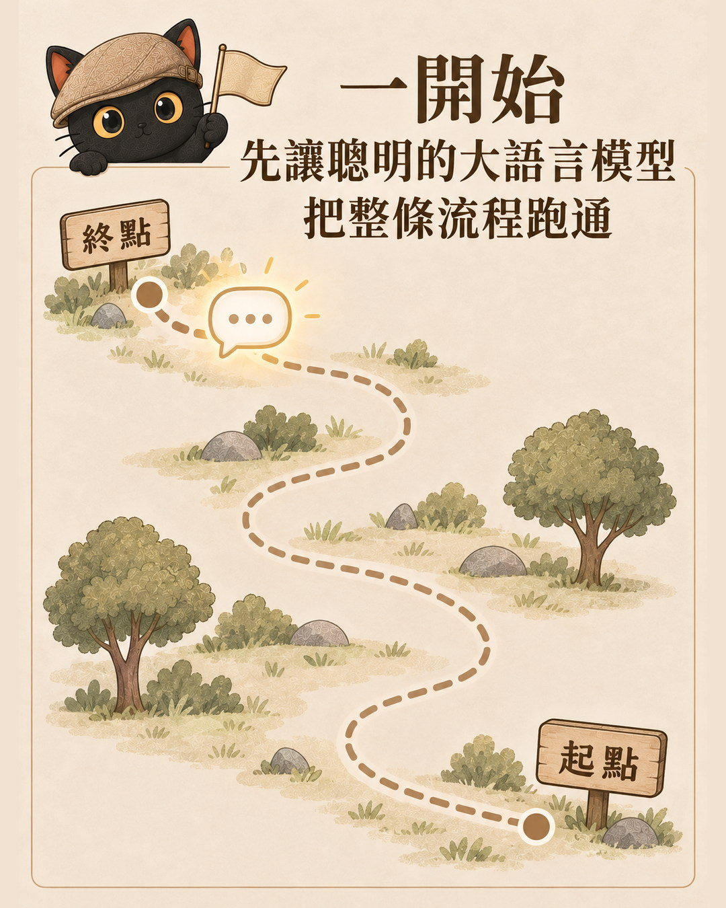
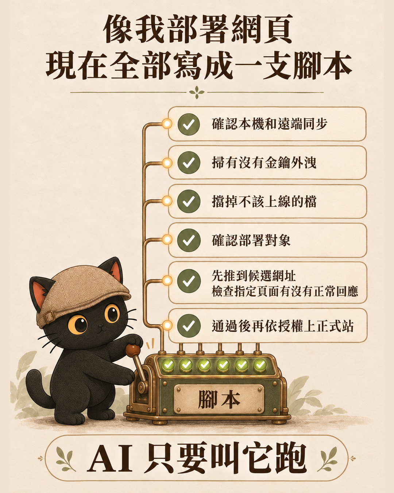
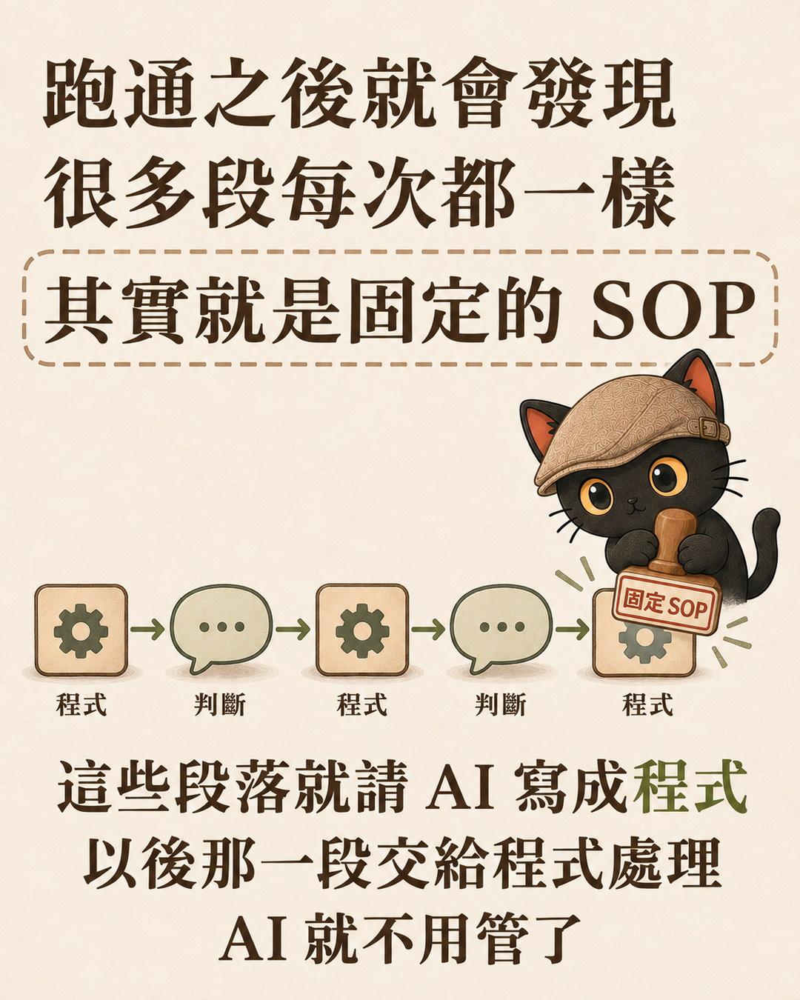
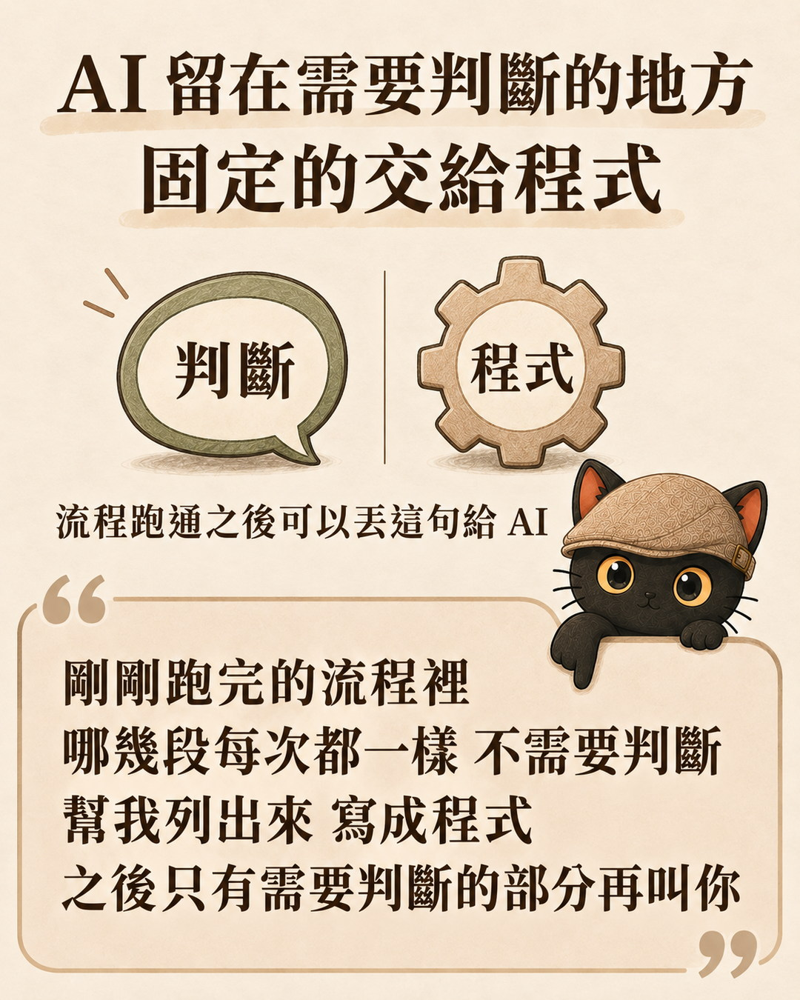

這篇在講什麼
工作流一開始，先讓聰明的大語言模型把整條流程跑通。跑通之後會發現，很多段是固定的 SOP（標準作業程序，也就是每次照同樣步驟做的那一套）。這些段落就請 AI 寫成程式，以後那一段交給程式，AI 就不用管了。寫程式的是 AI，你不用自己寫。
- 想用 AI 做自動化，卻卡在「我是不是要先學寫程式」的人
- 已經讓 AI 跑過幾條流程，發現它每次都在重做一樣步驟的人
- 要幫客戶或學員設計 AI 工作流，想說清楚哪段該寫程式的顧問與講師
- 三步順序：先跑通、找出固定的 SOP、請 AI 寫成程式
- 兩個真實例子：網頁上線前的檢查腳本、課後簡報上線前的檢查器
- 一句流程跑通之後可以直接丟給 AI 的話
我的順序：先讓 AI 跑通，再把固定的段落寫成程式

- 先讓聰明的大語言模型把整條流程跑通。
- 跑通之後，找出其中固定的 SOP。
- 請 AI 把這些段落寫成程式。以後那一段交給程式處理，AI 就不用管了。
寫出來的程式放在哪、誰來跑
我平常用的 AI 是 Claude Code 和 Codex。這兩個是可以在電腦上讀寫檔案、執行指令的 AI 工具，跟只在網頁對話框裡聊天的用法不一樣。
所以 AI 寫好的程式，會存成電腦裡的一個檔案。要用的時候，AI 自己下指令執行它，再讀它回報的結果。
我還有一份規則檔，叫 AGENTS.md，是我給各個 AI 工具共用的工作規則，透過各工具的設定，要求它們開工前先讀。裡面寫明：部署一律走下面那支腳本。所以 AI 不用每次重新想部署要做哪些事，叫它跑就好。
案例一：網頁上線前的固定檢查，寫成一支腳本
把做好的網頁放上網路，叫部署。我的部署檢查寫在一支腳本裡（腳本就是自動執行固定步驟的程式），叫 safe-deploy.sh。
下表是它主要的幾道檢查。實際走哪幾道，看網站放在哪個平台（Vercel、Cloudflare 都是放網站的服務）。

| 檢查 | 腳本做什麼 | 白話 |
|---|---|---|
| 專案自我驗收 | 有設定這項的專案，上次自己檢查沒過就不給部署 | 先修好再說 |
| 同步檢查 | 確認沒有還沒存進版本紀錄的修改，而且目前版本和雲端上追蹤的那一份一致 | 避免拿舊版蓋掉新版 |
| 秘密掃描 | 掃部署資料夾裡有沒有像金鑰、密碼的字串 | 擋住不小心把鑰匙一起公開 |
| 不該公開的檔案 | Cloudflare Pages 檢查部署資料夾最上層有沒有備份檔、金鑰檔、產生器資料夾這類指定檔名；Vercel 沒有排除清單檔時才擋，Worker 這條路不做 | 擋住雜物一起上線 |
| 課後簡報檢查 | 呼叫案例二那支檢查器 | 程式叫程式 |
| 部署對象核對 | 依平台核對資料夾綁定的網站專案、指定專案存不存在、設定上的名稱線上有沒有 | 避免推到別的網站，或憑空多長出一個 |
| 候選站驗收 | Vercel 和 Cloudflare Pages 先推到候選網址，檢查指定頁面有沒有回傳正常 | 先試推，不直接動正式站 |
| 上正式站 | Vercel 要指定正式網址才切換；Cloudflare Pages 要另外帶一個寫著專案名的授權設定才推 | 不會自己衝上正式站 |
| 正式站驗收 | 上正式站後再檢查一次；Vercel 若已切換正式網址，沒過會自動嘗試切回原本版本，退不回去就報錯等人處理 | 上線後再確認 |
這支腳本是一關一關補出來的。腳本檔頭記著第一關的來歷：2026 年 7 月 20 日，在筆電上先部署、後同步，把桌機剛推上去的課程卡從線上頁面蓋掉了。原因是部署指令推的是電腦當下的檔案，不看版本有沒有同步，所以同步檢查成了第一關。
檔頭也記著另一次：2026 年 8 月 31 日，發現 Cloudflare 上一個小服務的設定檔寫的名稱，線上根本不存在。照著它部署會另外長出一個新服務，原本接收訊息的入口卻還指著舊的那個，改了不生效，畫面還顯示成功。9 月 1 日，腳本就加了這條路的名稱核對。
- 它擋不住有人繞過它，直接手打部署指令。Claude Code 另外登記了兩支攔截程式，會擋下符合條件的直接部署指令，但沒有涵蓋所有部署方式。Codex 等其他 AI 靠規則檔把部署導到這支腳本。
- 網頁驗收只檢查指定頁面有沒有回傳正常，不能證明內容正確、畫面正常。
- Cloudflare Pages 正式站驗收沒過時，只印出退回的做法，不會自己退。
- 所謂的 AI 自動化，到底是 AI 在跑還是程式在跑？：這段講程式接手固定檢查，那篇用 LINE 備份機器人拆 AI 建流程、程式跑流程的分工。
案例二：課後簡報上線前的固定檢查，連 AI 的審查都要留紀錄
我上完一堂課，會把逐字稿整理成教學手冊和課後簡報（官網 7 月 15 日有一篇專門拆這條流程）。課後簡報上線前的固定檢查，後來也寫成一支程式：check-postclass-loop.py，檔名標的日期是 2026 年 9 月 28 日。
部署腳本跑到中間，會自動叫這支檢查器。它在部署資料夾裡找帶有課後簡報標記的網頁，沒找到就跳過；找到後，除了符合條件、已經另外審過的舊頁，其餘都要通過下面的檢查：
- 逐章清單裡，每一章都要標「已涵蓋」，或「刻意不放」並附理由。
- 標「已涵蓋」的章節，清單指定的簡報位置要真的存在。
- 簡報原始碼要有「請搜尋引擎不要收錄」的標記，以及投影時把課堂補充內容藏起來的設定。
- 要有一份審查紀錄：上面寫的整理模型和審查模型要是不同公司的，結論要是通過，而且沒有待解決的阻擋問題。
這份審查紀錄還要對得上檔案指紋（SHA-256，一種從檔案內容算出來的編碼，檔案內容一改，指紋通常就會變）。簡報、逐章清單、教學手冊、原始逐字稿都會核對。審查完如果又改了簡報，卻還拿舊的審查紀錄來用，就不會通過。
這支程式的開頭寫了它管不到的地方：機器只能證明結構、對應和這些紀錄能互相對上；內容有沒有亂加、教學內容有沒有真的涵蓋，要靠另一家 AI 的審查。它也只能核對紀錄上寫的模型，不能證明審查品質。
- 一堂課上完之後，我怎麼把它變成可以重複用的知識：這段只講上線前的檢查器，那篇拆整條課後整理流程。
兩個案例的共同點：固定的檢查交給程式，要讀懂的留給 AI

| 這一段 | 交給誰 | 例子 |
|---|---|---|
| 每次都用同樣方式檢查，對就是對、錯就是錯 | 寫成程式 | 版本有沒有同步、檔案指紋對不對得上 |
| 要讀懂內容才判斷得了 | 留給 AI | 課後簡報有沒有腦補、有沒有真的涵蓋 |
- 讓 AI 只做需要判斷的事，其他交給程式｜四情境分工法：這篇講先後順序，那篇用變動程度把流程分成四種情境，判斷該用程式、技能包還是參考檔。
你可以怎麼開始：流程跑通之後丟這句給 AI
剛剛跑完的流程裡 哪幾段每次都一樣 不需要判斷 幫我列出來 寫成程式 之後只有需要判斷的部分再叫你

- 寫了一堆規則給 AI，為什麼還是沒人執行？：規則要有人執行，要掛 Hook、事件或排程這類引擎。
- 想用 AI 提升效率，結果都在瞎忙？：寫成程式之前，先問這段能不能刪。